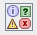

| 1 |
OptionPane Demo |
- Press Left/Right arrow key until the OptionPane icon
 has focus. Press 'space' to choose.
- Tab until the "OptionPane Demo" tab has focus. Press 'space'. Press 'tab'. The 'Show Input Dialog'
button should have focus.
- Press 'space'. An Input dialog should pop up. Type some text, and hit return. The dialog should
change to a Message dialog with text saying "That was a pretty good movie!" Press return.
- Bring up the dialog again (space). Press 'esc' and confirm that the dialog goes away without the
Message from above.
- Press Tab to move down through the buttons, and select "Component Dialog Example" (press space). A
dialog should appear. Tab to ensure that you can navigate through all the components:
a. Textfield
b. ComboBox
c. All 4 buttons: "Cancel", "Probably", "Maybe", "No", "Yes".
d. Press 'esc' to cancel the dialog.
|